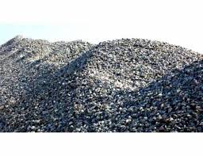

Types of Gravel

Pea Gravel
Commonly used for driveways and pathways due to its smooth texture and small size.

Crushed Stone
Often used in construction for making concrete and as a base material for roads and buildings.

River Rock
Ideal for landscaping and decorative purposes, offering a smooth and rounded appearance.

Lagoon Gravel
Used for drainage systems and as a base layer in construction due to its porous nature.